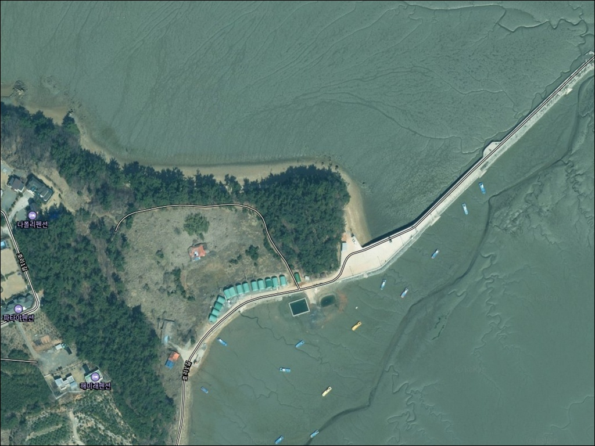
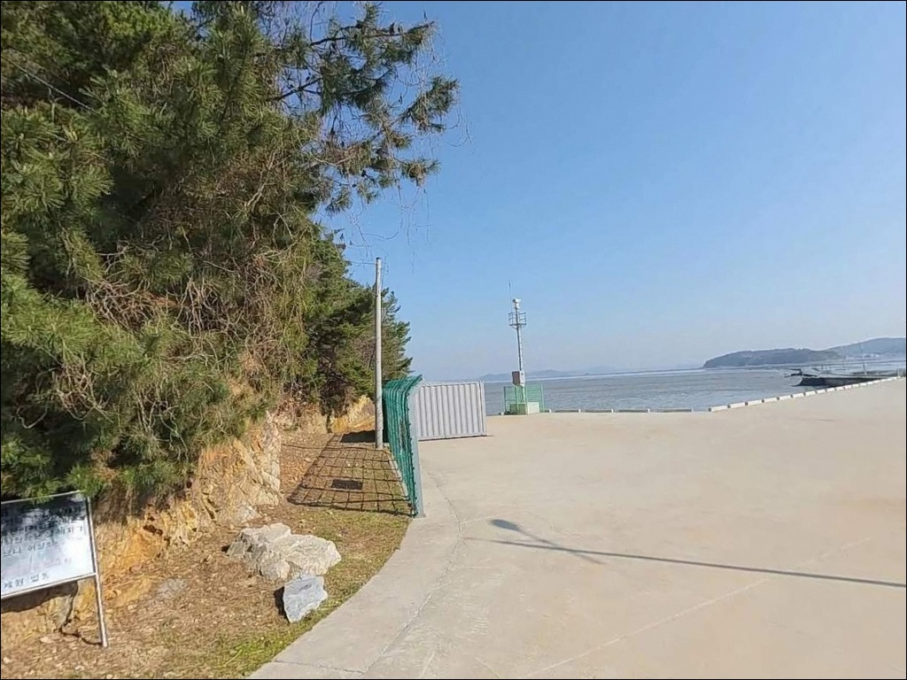
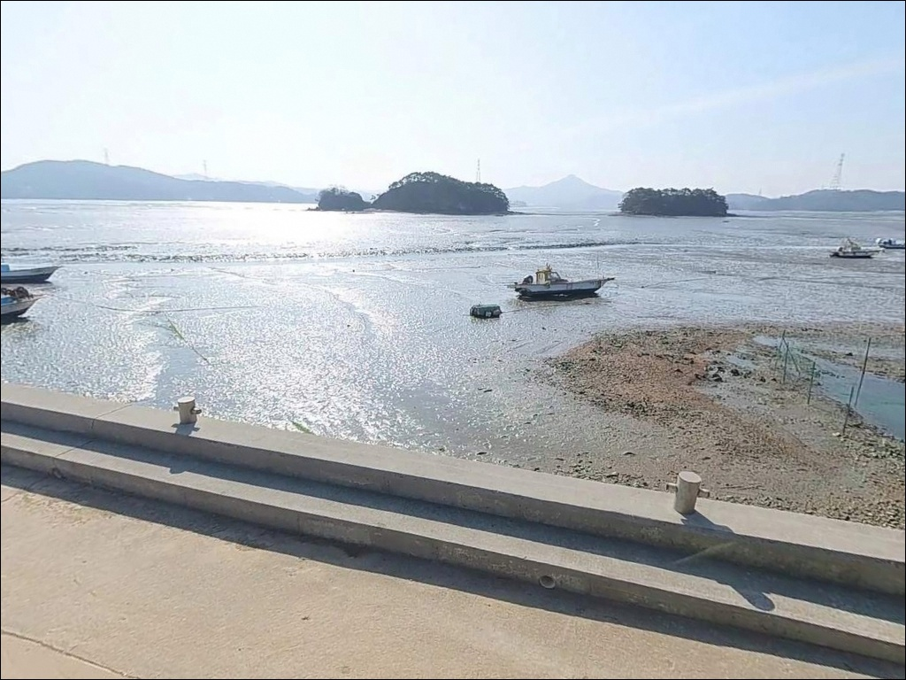
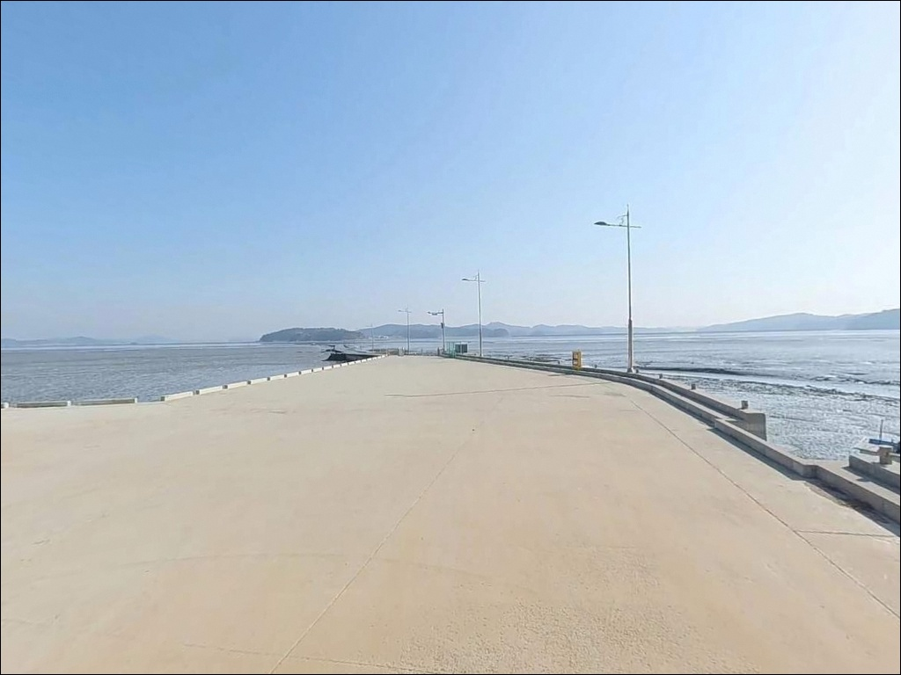
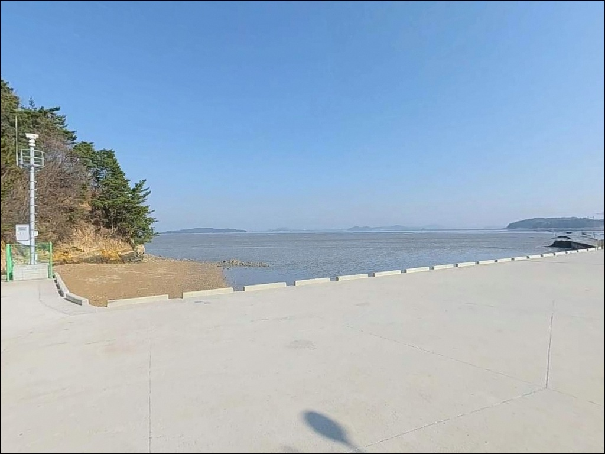
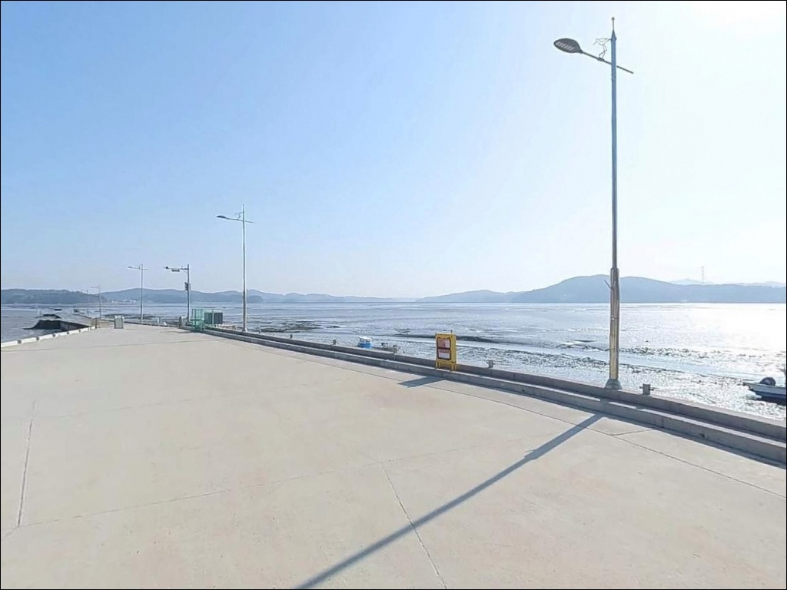
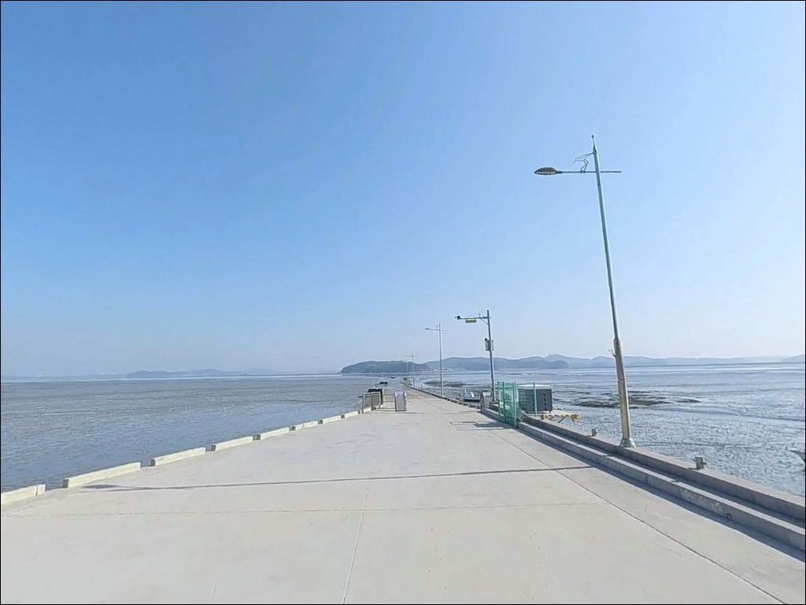
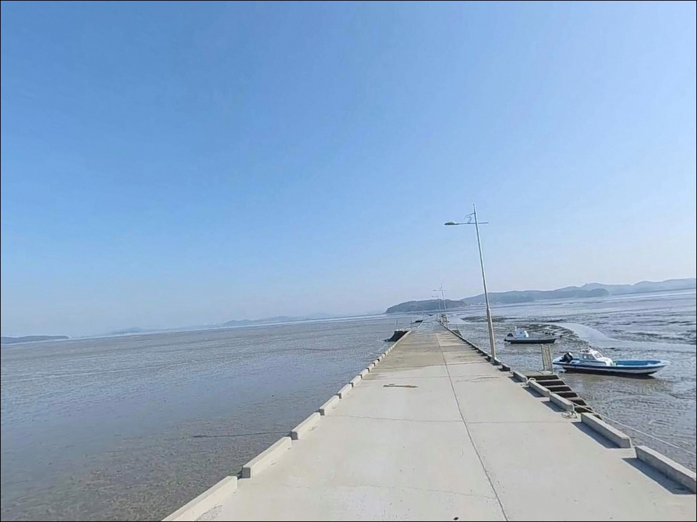
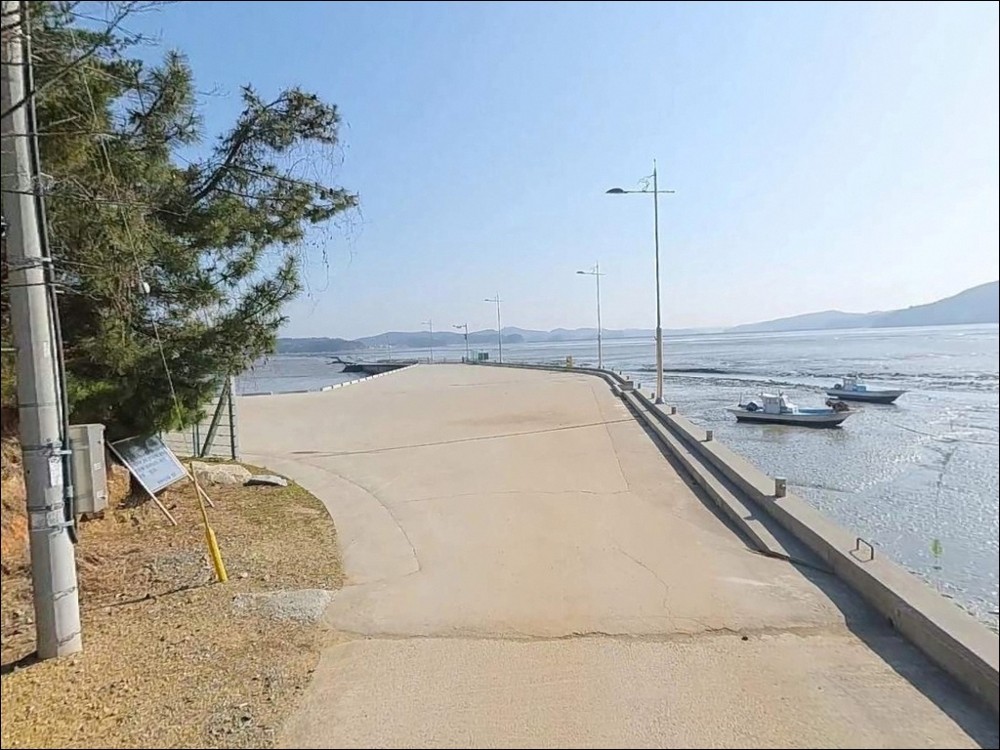

호리 선착장, 충남 서산시 한적한 분위기 속 차박, 낚시를 함께 하기 좋은 곳


포인트 안내
호리 선착장
충남 서산시 팔봉면 호리 29-337
이 포인트에서 가장 많이 틀리는 판단은
물때 확인 없이 출발하는 것입니다.
가로림만은 서해 내만 중에서도 조차가 큰 편으로,
간조 시에는 선착장 앞이 갯벌로 드러나
어떤 채비를 써도 낚시 자체가 어려운 상황이 됩니다.
이 글은 호리 선착장의 진입 여건, 물때 기준,
지형 분석, 낚시 스타일 적합성에 집중합니다.
조황 단정이나 특정 어종 보장은
이 글의 범위에 포함되지 않습니다.
팔봉반도 서단에 자리한 호리 선착장은
2012년 어촌 정주어항으로 지정된 공식 어항으로,
선착장 앞으로 모래톱이 쌓인 작은 섬 세 개가
병풍처럼 늘어서는 전형적인
서해 내만 어촌 풍경을 갖춘 포인트입니다.
온라인 낚시 정보가 많지 않은 저정보 포인트라
현장 여건을 미리 파악하고 가는 것이
방문 성패를 가릅니다.

1. 진입 동선과 포인트 접근성
팔봉면 호리는 가로림만을 끼고
서쪽으로 돌출된 반도형 마을입니다.
육지 방면에서 선착장 방향으로 이어지는 마을 진입도로는
편도 1차선 수준으로 폭이 넓지 않은 편입니다.
어촌 마을 도로 특성상 포장 상태가 고르지 않을 수 있으며,
급경사 구간은 많지 않을 것으로 보입니다.
선착장 인근에서 소형~중형 차량 기준
회차가 가능한 구조일 가능성이 있습니다.
어선 조업 시간대에는 접안 공간 주변이
분주할 수 있어 대형 차량이라면
출발 전 위성지도로 진입로와 회차 여건을 사전 확인하는 것이
안전합니다.
주차는 선착장 접안면 인근 공터와
마을 진입 초입 도로변 여유 공간을
활용하는 방식이 일반적으로 보입니다.
선착장은 어업 활동이 이루어지는 공간이므로
어선 이동 동선을 막지 않는 자리를
먼저 확인하는 것이 기본 매너입니다.

2. 차박 환경과 야간 체류 여건
호리 선착장 주변은 소규모 어촌 마을 분위기로,
야간에는 차량 통행이 거의 없는 편입니다.
민가 밀집도가 낮아 상대적으로 조용한 환경이지만,
선착장과 마을이 인접해 있어
완전한 고립형 노지 차박 분위기는 아닙니다.
가로등은 선착장 주변 일부에 있을 가능성이 있으나
전체적으로 제한적인 편으로 보입니다.
개인 조명 장비는 필수로 챙겨야 합니다.
가로림만 내만 특성상 외해 직격이 없어
바람과 파도 영향은 비교적 덜한 편이지만,
기상에 따라 만 안쪽에서도
바람 영향을 받는 경우가 있습니다.
주차 공간이 넉넉하지 않아
차박을 메인으로 계획한다면
공간 확보 여부를 현장에서 먼저 확인해야 합니다.
낚시를 마치고 조용히 하룻밤 머무는 용도로는
무난한 수준의 여건입니다.


3. 주변 편의시설 및 인프라 현황
호리 선착장 해당 지번에
공중화장실이 등록되어 있어
선착장 인근에 화장실 시설이 확인됩니다.
다른 소형 선착장에 비해
낚시 중 화장실 접근성이 나은 조건입니다.
반경 3km 이내에는 편의점, 마트, 주유소 등
확정된 편의시설 정보가 확인되지 않습니다.
팔봉면 호리 일대는 소규모 어촌 지역으로,
출발 전 식수·연료·낚시 소품을 완전히 갖추고 진입하는 것이
현실적인 준비 방식입니다.
반경 10km권으로 이동하면
서산시 대산읍 방면의 삼길포항 일대에서
편의시설을 활용할 수 있습니다.
출조 전 물품 보충이 필요하다면
삼길포항 방면을 먼저 경유하는 동선이
효율적입니다.

4. 방문 전 반드시 확인해야 할 물때와 해양보호구역 주의사항
가로림만이란 서산시와 태안군 사이에 형성된
반폐쇄성 내만으로,
길이 약 25km에 걸쳐 남쪽으로 깊이 만입된 구조입니다.
만 전역에 걸쳐 조차가 크게 나타나
호리 선착장도 간조 시 수심이 급격히 낮아집니다.
출발 전 바다타임에서 호리 기준 물때를 확인하고,
만조 전후를 노려 도착 시각을 맞추는 것이
이 포인트의 기본 전략입니다.
가로림만 해역은 2016년 해양수산부에 의해
해양보호구역으로 지정된 곳입니다.
낚시 행위에 대한 별도 금지 규정은
이번 조사에서 확인되지 않았으나,
현장에 설치된 안내판 확인이 원칙입니다.
서해안 특성상 기상 변화가 빠릅니다.
출조 당일 아침 기상청 예보를 다시 한 번 확인하고,
야간 낚시에는 헤드랜턴과 구명조끼를 반드시 갖춰야 합니다.
선착장 석축과 갯벌 경계 구간은 미끄러운 편이므로
미끄럼 방지 신발도 챙기는 것이 좋습니다.

5. 지형 기반 낚시 여건 분석
호리 선착장은 팔봉반도 서단에서
가로림만 안쪽을 바라보는 구조입니다.
선착장 앞으로는 모래톱이 쌓인 작은 섬 세 개가
병풍처럼 늘어서 있으며,
그 너머로 가로림만의 물길이 이어집니다.
만 안쪽 위치 특성상 외해 직격 파도는 적고,
조류는 만 입구에 비해 완만하지만
만조와 간조 사이 수심 변화폭이 큰 구조입니다.
수심은 만조 시 3~5m 내외로 추정됩니다.
간조 시에는 선착장 접안 구역 일부까지
수심이 크게 낮아질 수 있어
낚시 가능 시간이 만조 전후로 집중됩니다.
선착장 주변은 갯벌과 암석 해안이 혼재하며,
선착장 끝단 방향의 수로 라인은
조류가 비교적 형성되는 구간으로 보입니다.
만조 전후 타이밍을 맞추지 않으면
호리 선착장에서는 낚시 자체가 불가능한 상황이 됩니다.
수심이 나오는 구간이 한정적이므로
선착장 끝단 수로 방향으로 채비를 보내
바닥을 탐색하는 방식이
이 포인트의 기본 공략 방향입니다.
가기 전에 최신 조황은 꼭 검색해 보시기 바랍니다.


6. 포인트에 어울리는 낚시 스타일
원투낚시는 이 포인트 지형 조건과
가장 잘 맞는 스타일입니다.
갯벌과 암석이 혼재하는 가로림만 내만형 지형에서
들물이 차오르는 타이밍에
선착장 끝단 수로 방향으로 채비를 보내면
망둥어, 붕장어, 우럭 등의 어종을
기대해 볼 수 있습니다.
가을이 망둥어 시즌의 피크로 알려져 있으며,
봄~가을에 걸쳐 우럭 활성 시기와 겹칩니다.
원투낚시란 무거운 봉돌을 달아 채비를
먼 거리로 캐스팅한 뒤
바닥 어종의 입질을 기다리는 바다낚시 방식입니다.
내만형 구조에서는 채비를 무작정 멀리 보내기보다
수로 방향의 조류 흐름을 먼저 파악하는 것이
원투 효율을 높이는 조건입니다.
라이트 루어도 시도해 볼 만합니다.
지그헤드 웜 채비로
선착장 구조물 주변이나 갯벌 경계 라인을
천천히 탐색하는 방식이 이 포인트에 맞습니다.
야간에는 농어가 수로 방향으로 들어올 가능성이 있어
만조 전후 루어 탐색을 병행해 볼 수 있습니다.
찌낚시는 조류가 완만한 만조 전후 내항 쪽에서
부담 없이 시도하기 좋은 스타일입니다.

7. 대안 포인트와 플랜 B 동선
호리 선착장과 같은 해안선에서
가장 가까운 대안은 구도항입니다.
같은 팔봉면 호리에 위치한 지방어항으로
약 1km 거리에 있으며,
고파도 여객선이 운항하는 여객선 터미널도 있는 항입니다.
호리 선착장보다 규모와 접근성이 안정적이며,
가로림만 물길을 끼고 있어
우럭, 도다리, 붕장어 등의 조과를
기대해 볼 수 있는 방파제·선착장 포인트로 알려져 있습니다.
반경 10km권에서는 삼길포항이 대표 대안입니다.
서산시 대산읍 화곡리의 국가어항으로,
방파제 석축 구간에서 감성돔과 우럭을 노릴 수 있고
방파제 끝단은 농어·삼치 루어 포인트로 알려진 곳입니다.
화장실, 매점 등 편의시설이 갖춰져 있어
장비 보충이 필요할 때 경유지로 활용하기 좋습니다.
선착장 끝단 수로 방향이
이 포인트에서 조류가 가장 잘 살아나는 구간입니다.
호리 선착장을 탐색 포인트로 잡고
삼길포항을 베이스 포인트로 설정하는 동선은
팔봉권역에서 하루를 효율적으로 운용하는 방법입니다.

물때를 알고 가면
호리 선착장이 달라 보입니다
에깅이나 갯바위낚시를 메인으로 생각하는 낚시인보다는
원투낚시와 생활낚시 스타일에 익숙한 낚시인에게
잘 맞는 포인트입니다.
물때를 맞춰 조용히 채비를 던지거나
라이트 루어로 선착장 수로를 탐색하는 방식으로
가을 망둥어 시즌을 노린다면
나름의 조과를 기대해 볼 수 있는 곳입니다.
온라인 낚시 정보가 많지 않은
저정보 탐험형 포인트라는 점에서
직접 발품을 파는 재미도 있습니다.
다만 물때를 무시하고 도착하거나
편의시설을 기대하고 간다면
헛걸음이 되기 쉬운 구조의 포인트이기도 합니다.
물때 확인, 완전 자급 준비,
현장 해양보호구역 안내판 확인,
이 세 가지를 갖추고 가면
기억에 남는 출조가 될 수 있습니다.
차박은 조용히 하룻밤 낚시와 함께 머무는 용도로는
가능한 여건이지만,
주차 공간이 넉넉하지 않아
대형 차량이나 인원이 많은 경우에는
구도항이나 삼길포항 방면을 대안으로 두는 것이
현실적입니다.
번잡하지 않은 서해 내만에서
낚시와 차박을 함께 즐기고 싶다면
충분히 고려해볼 만한 출조지입니다.